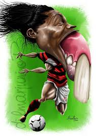

Portafolio de evidencias Betanzos Soto Jorge Alonso
Este es el portafolio de evidencias para la asignatura de PW y Pruebas
Práctica 1 - CurriculumEjemplo de curriculum elaborado en html con css para formato
Práctica 2 - Primeros pasosEjemplo de página web con header, article, section y footer. Incluye css para dar formato
Práctica 3 - Log inEjemplo de página web de un log in. Incluye imagenes, campos de texto y botones. Incluye css para dar formato

Práctica 4 - FormularioEjemplo de página web con un formulario. Incluye descripción de métodos y un formulario ejemplo
Práctica 5 - EjerciciosSeis ejercicios creados en base a prompts pero en lugar de ser inteligencia artificial soy inteligencia artesanal y en lugar de hacerlo en cinco minutos me tardo cinco horas y lo hago mal